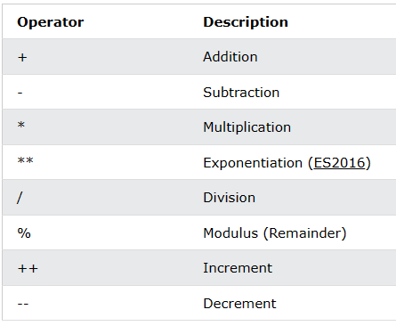
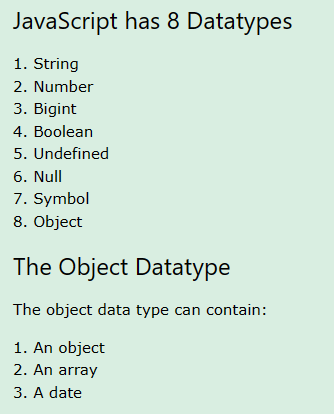

Seguindo com o desenvolvimento! podemos usar como material de apoio o site da w3Schools.
Podemos declarar variáveis de 4 formas:
Os simbolos $ e _ são tratados como letra e podem ser usados como identificador de variável, assim como podem estar no início da variável
O sinal de = representa a atribuição de valor para nossa variável. Enquando que para termos o valor de igual devemos usar ==.
let e constant tem escopo de bloco.
let x = 2;
{
let x = 10;
}
{
let x = "Emerson";
}
Em javascript temos os seguintes operadores:
Para mais estudos acesse o site.
No javascript temos 8 tipos de dados que são atribuidos conforme a variável recebe seu valor.
Para mais estudos acesse o site.